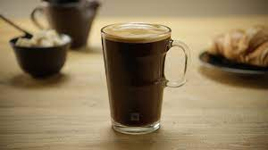

Coffee Americano

Description
It's not complex coffee beverage, it's just an espresso shot mixed with hot (boiling even) water! It's nice as it increases the volume of the espresso shot and allow one to enjoy the tase of coffee more :) Quoting from "homegrounds.co": It is made by adding hot water to an espresso shot. The water dilutes the espresso a bit, giving you the volume of a drip, but with an espresso taste.
Ingredients
- 14-18 grams espresso coffee beans
- hot or almost boiling water
- espresso machine
- grinder
- tamper
Steps
- Measure out your beans for a double (or single) shot. Grind them really fine.
- Tamp the beans, then put the portafilter into its spot on the machine.
- Make the espresso.
- Heat up the water to 70-76 degrees Celsius (or don't if your machine doesn't have a temp indicator)
- Pour the espresso into the hot water, mix 1 part espresso to 2 parts water.
- What I personally do is I use the hose attached to my machine. I hold it about 1 centimeter above the top of the espresso shot to the side and let the machine thrust in hot water into the cup. It kinda gives the shot bubble & shit.